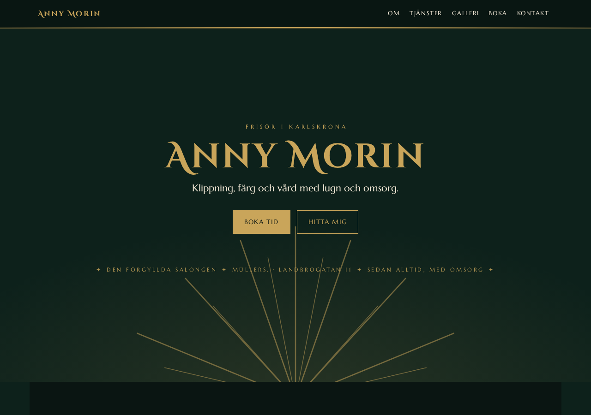

index.html
<section id="om">
<h2>Hår som känns som ditt</h2>
<p class="lede">Salongen i kvarten.</p>
<div class="hero-zoom" data-speed="0.4">
<img src="assets/salong.jpg" alt="">
</div>
</section>
base.css
:root {
--bg: #0d211b;
--ink: #f4ead8;
--accent: #c9a55a;
}
.hero-zoom {
scale: 1.08; will-change: transform;
}
scroll-motion.js
const tl = gsap.timeline({
scrollTrigger: {
pin: "#stage",
scrub: 1,
},
});
tl.to(".hero-zoom", { scale: 1 });
Kö
Kör
Verifierad
- uppdrag: 6
- kör: 2
- klara: 2
- i kö: 2
- DA-varv: 3
mina prototyper
Den här ser färdig ut.
Det gör den inte. än.
scen 1 · koden
Bakom bilden ligger koden.
index.html · base.css · scroll-motion.js — handskrivet, inte genererat.
scen 2 · flödet
Jag bygger inte rakt på.
Fem steg. En grind. Testet skickar byggaren baklänges — max tre varv.
scen 3 · tavlan
Allt har ett kort.
Kö, kör, verifierad. Inget hoppar kön. Inget blir klart utan test.
scen 4 · orchestratorn
Vem gör allt? Inte jag.
Jag skriver instrukser. En orchestrator fördelar. Arbetarna kör. Verifieraren stoppar felen.
scen 5 · tillbaka
Så byggs det du ser.
Under allt det här: jag.
Om mig
Det här är en konceptmock för portfölj-gatewayn — sidan under scroll-numret. Den riktiga texten skrivs när portföljen går mot produktion. Rulla upp igen: historien spelas baklänges.
Projekt
Platshållare för prototyperna. Tema 12 — Förgyllda salongen — är ett av dem; originaltemat lever under prototypes/ och serveras på :8090.